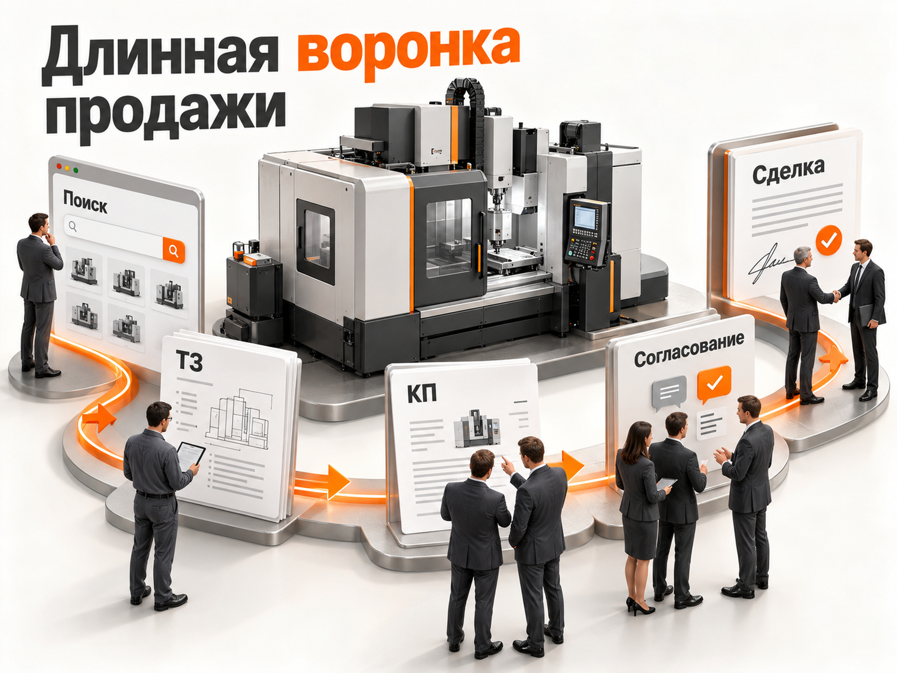
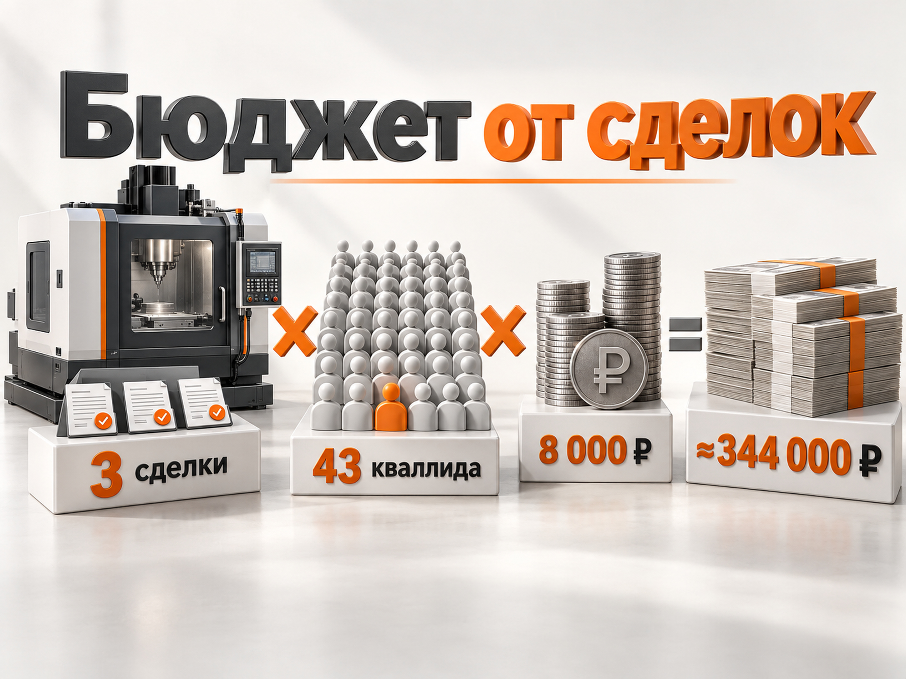
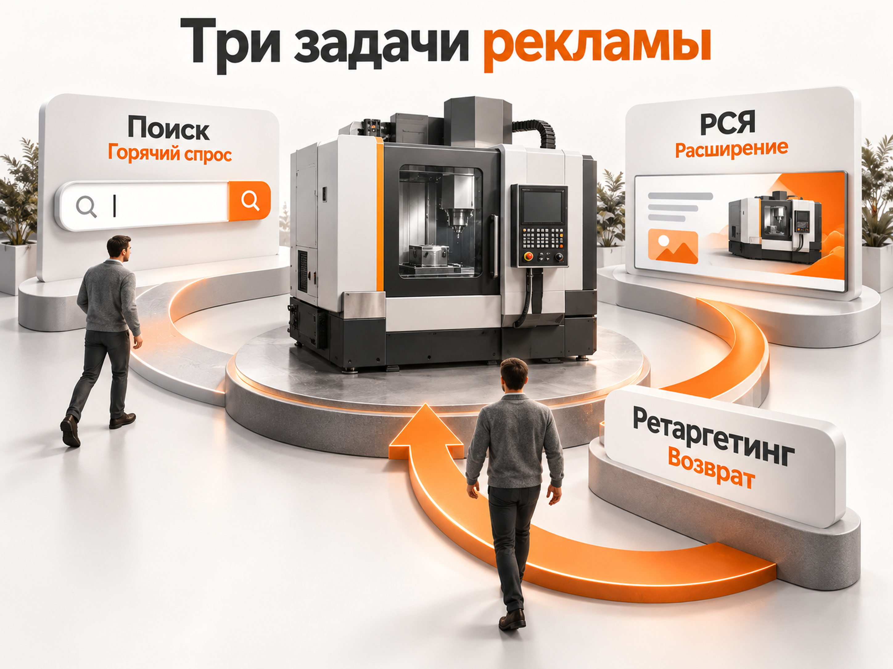

Блог о платном трафике
Продвижение дорогого оборудования в интернете
Продвижение дорогого оборудования сильно отличается от рекламы массовых товаров. Клиент редко видит объявление и сразу покупает станок, производственную линию или медицинский аппарат за несколько миллионов рублей. Между первым переходом на сайт и договором могут пройти недели или месяцы.

Поэтому основная задача рекламы здесь - не получить максимальное количество дешёвых заявок. Нужно находить потенциальных покупателей с подходящей задачей и бюджетом, доводить их до квалификации, коммерческого предложения и сделки.
Для большинства проектов с уже существующим поисковым спросом одним из основных платных каналов я бы рассматривал Яндекс Директ. Но считать результат нужно по всей воронке:
реклама -> обращение -> квалифицированный лид -> КП -> договор.
Свежие российские кейсы 2026 года показывают, что Директ способен приводить клиентов для промышленного, производственного и медицинского оборудования стоимостью в миллионы рублей. При этом стоимость обращения и даже квалифицированного лида отличается в разы в зависимости от продукта, сайта, региона и структуры спроса.
Почему дорогое оборудование сложно продвигать
В массовом B2C путь клиента иногда укладывается в один сеанс: человек ищет товар, сравнивает несколько предложений и оформляет заказ.
С оборудованием всё сложнее.
В покупке могут участвовать инженер, технолог, снабженец, главный врач, руководитель подразделения, финансовый директор и собственник компании. Один человек формирует технические требования, другой собирает предложения, третий согласует бюджет.
Для проектного и промышленного оборудования сама сделка может включать:
- поиск поставщика;
- первичную консультацию;
- передачу технического задания;
- подбор модели или конфигурации;
- расчёт стоимости;
- коммерческое предложение;
- техническое и финансовое согласование;
- договор.
Яндекс в свежем материале о продвижении промышленного оборудования также разделяет типовое и проектное оборудование. Для сложных решений особенно важны консультация, техническая информация и сопровождение длительной сделки.
Поэтому фраза «Директ принёс 50 заявок» сама по себе почти ничего не говорит о результате. Из 50 обращений реальными покупателями могут оказаться и 5 человек, и 30.
Начинать нужно не с рекламы, а с экономики сделки
До настройки кампаний я бы определил четыре цифры:
- средний чек;
- маржинальность сделки;
- допустимую стоимость привлечения клиента;
- конверсию квалифицированного лида в договор.
Допустим, оборудование продаётся за 2 млн ₽, а бизнес готов тратить на привлечение одной продажи не более 150 000 ₽.
Если из 10 квалифицированных лидов заключается один договор, допустимая стоимость квалифицированного лида составит:
150 000 × 10% = 15 000 ₽.
Если квалифицированный лид обходится дороже, рекламу нужно оптимизировать или пересматривать допустимый CAC. Если существенно дешевле, появляется возможность масштабироваться.
Для оборудования именно такая математика полезнее попытки найти в интернете «нормальный CPL».
Каким должен быть сайт для продажи оборудования
Отправлять весь рекламный трафик на главную страницу корпоративного сайта обычно плохая идея.
Человек, который ищет конкретный промышленный станок, УЗИ-аппарат или фасовочную линию, уже сформулировал достаточно точную потребность. После клика он должен сразу увидеть нужную категорию оборудования.
На странице желательно показать:
- назначение оборудования;
- основные технические характеристики;
- варианты комплектации;
- фотографии и видео;
- отрасли и задачи, для которых оно подходит;
- географию поставок;
- сервис и гарантию;
- сроки производства или поставки, если их можно назвать;
- реальные проекты или клиентов;
- понятный следующий шаг.
Для дорогой техники кнопка «Купить» часто вообще не нужна.
Лучше работают действия, соответствующие реальному процессу продажи:
«Получить расчёт», «Запросить КП», «Подобрать модель», «Обсудить техническое задание», «Получить консультацию инженера».
Свежий промышленный кейс 2026 года хорошо показывает влияние посадочной. После создания отдельных страниц под продуктовые категории конверсия рекламного трафика выросла с 0,9% до 3,4%.
Если речь идёт именно о промышленном сегменте, отдельно эту тему я разбираю в материале «Реклама промышленного оборудования: Яндекс Директ и B2B-продвижение».
Как собирать спрос в Яндекс Директе
В оборудовании семантику удобно разделять не только по названию товара, но и по степени сформированности потребности.
Прямой коммерческий спрос
Самый очевидный слой:
«фрезерный станок купить»
«фасовочная линия цена»
«узи аппарат купить»
«промышленный дозатор заказать»
«лазерный станок производитель»
Человек уже понимает, что ему нужно. Такой спрос обычно нужно проверить первым.
Запросы по моделям и характеристикам
В технических нишах пользователь может искать оборудование по модели, мощности, производительности, размеру рабочей зоны, типу сырья или другой характеристике.
Этот спрос часто намного точнее общих запросов.
Именно поэтому при сборе семантики желательно подключать специалиста клиента, который понимает оборудование. Маркетолог не всегда способен определить, являются две похожие технические формулировки взаимозаменяемыми.
В свежем кейсе по промышленным станкам первоначально рассматривалось 12 577 запросов, но после технической проверки в работу оставили только 483.
Проблемный спрос
Иногда покупатель ищет не конкретную модель, а решение:
«автоматизация фасовки порошков»
«оборудование для упаковки молочной продукции»
«оборудование для диагностики клиники»
Такие запросы стоит тестировать отдельно. Они могут находиться дальше от сделки и давать другую экономику.
Нецелевой спрос
У оборудования особенно много внешне похожих, но бесполезных запросов:
«своими руками»
«чертёж»
«скачать»
«реферат»
«обучение»
«вакансии»
«оператор станка»
«ремонт»
«б/у»
«для дома»
При этом конкретное слово нельзя автоматически считать минус-словом для любой компании. Если поставщик действительно продаёт б/у оборудование или занимается ремонтом, такой трафик станет коммерческим.
После запуска нужно регулярно смотреть реальные поисковые запросы, а не рассчитывать только на список минус-фраз, составленный до старта.
Подробнее эту проблему я разбираю в статье «Нецелевые и некачественные лиды из Яндекс Директа».
Поиск или РСЯ для оборудования
Универсального ответа нет.
Поиск
Поиск хорошо подходит для уже сформированного спроса. Если закупщик сам вводит точное название оборудования, модель или коммерческий запрос, реклама появляется в правильный момент.
Но у такого трафика есть два ограничения.
Первое - объём. Чем уже оборудование, тем быстрее заканчивается прямой спрос.
Второе - стоимость клика. В конкурентных технических нишах поисковый трафик может быть очень дорогим.
Поэтому дорогой Поиск нельзя оценивать по CPC отдельно от качества лида.
РСЯ
Рекламная сеть позволяет получить дополнительный объём и работать с пользователями, которые ещё не ввели точный запрос.
В B2B она вполне может обгонять Поиск.
Например, в свежем кейсе по промышленным станкам поисковые кампании после теста вообще отключили: стоимость первичной заявки оказалась в 1,5-2 раза выше РСЯ при сопоставимом качестве лидов. За январь-март 2026 года проект получил 98 лидов при расходе 257 946,90 ₽. CPL составил 2 632,11 ₽, доля квалифицированных обращений - 35,9%, стоимость квалифицированного лида - 7 331,78 ₽.
Это не означает, что для оборудования «РСЯ лучше Поиска». В другом проекте ситуация может быть обратной.
Нужно сравнивать каналы по квалифицированным лидам и продажам.
Ретаргетинг особенно важен при длинной сделке
При покупке оборудования человек может несколько раз возвращаться к выбору.
Он изучил характеристики сегодня, через неделю обсудил оборудование с инженером, затем запросил бюджет у руководства и только после этого вернулся к поставщикам.
Поэтому аудитории посетителей сайта здесь особенно ценны.
Можно отдельно работать с пользователями, которые:
- изучали конкретную категорию оборудования;
- смотрели несколько моделей;
- провели значительное время на технической странице;
- начали отправлять заявку;
- уже обращались, но не дошли до следующего этапа.
В опубликованном в марте 2026 года кейсе производителя промышленного оборудования ретаргетинг к четвёртому месяцу давал 12% квалифицированных заявок.
Но повторное объявление должно продолжать процесс выбора. Пользователю, который уже изучал оборудование, логичнее предложить расчёт, подбор комплектации или консультацию, чем снова показывать общее «Промышленное оборудование от производителя».
Аналитика должна доходить до CRM
Главная ошибка в дорогом B2B - оптимизировать рекламу только по отправленным формам.
Допустим, одна кампания принесла 50 заявок по 2 000 ₽. Другая - 20 заявок по 4 000 ₽.
По CPL первая выглядит намного лучше.
Но если из первых 50 заявок квалификацию прошли 5, стоимость квалифицированного лида составила 20 000 ₽.
Если во второй кампании квалификацию прошли 12 из 20, стоимость квалифицированного лида составила около 6 667 ₽.
Поэтому минимум, который желательно передавать из отдела продаж:
новая заявка -> квалифицирован -> отправлено КП -> договор.
Когда данных достаточно, эти статусы можно использовать и для оптимизации рекламы через офлайн-конверсии.
Для сложного B2B это намного полезнее, чем обучать алгоритм на любой отправке формы.
Общий подход к такой рекламе я подробнее разбираю в материале «Контекстная реклама для B2B».
Что показывают свежие кейсы 2026 года
Универсального «среднего CPL оборудования» по этим данным получить нельзя. Но кейсы дают представление о реальном разбросе экономики.
| Проект | Период / условия | Результат |
|---|---|---|
| Промышленные станки | январь-март 2026 | 257 947 ₽ расхода, 98 лидов, CPL 2 632 ₽, 35,9% квалифицированных, CPQL 7 332 ₽ |
| Промышленное оборудование для пищевой отрасли | опубликован в марте 2026, чек 1,2-8 млн ₽ | Цикл сделки 2-6 месяцев, в результате 7 сделок со средним чеком 3,2 млн ₽ |
| Медицинское оборудование | октябрь 2025 - август 2026, средний чек 1,25 млн ₽ | 3,59 млн ₽ бюджета, 1 530 заявок, 1 056 квалифицированных лидов, 296 КП, 53 договора |
| Светодиодное оборудование B2B | период работы до мая 2026 | Отдельное товарное направление: 710 тыс. ₽ расхода, 420 лидов, 185 квалифицированных лидов, 7 продаж |
Особенно показательна медицинская техника. При рекламном бюджете 3 587 450 ₽ получили 1 530 обращений. Стоимость обычной заявки составила около 2 345 ₽.
Но дальше воронка выглядела так:
1 530 заявок -> 1 056 квалифицированных -> 296 КП -> 53 договора.
Стоимость квалифицированного лида составила 3 397 ₽, а рекламные расходы на один договор - 67 688 ₽. Средний чек проекта был 1,25 млн ₽.
Это хороший пример того, почему для дорогого оборудования CPL нельзя рассматривать отдельно.
Какой CPL закладывать в прогноз
Я бы не писал, что «нормальная заявка на оборудование стоит 3 000 ₽».
Свежие кейсы показывают хорошие результаты примерно от 1,5-3 тыс. ₽ за первичное обращение, но в более сложных проектах показатель может быть существенно выше.
Ещё важнее разница между обычной заявкой и квалифицированным лидом.
В свежих кейсах встречаются:
- около 3 400 ₽ за квалифицированный лид в медицинском и светодиодном оборудовании;
- около 7 300 ₽ в проекте промышленных станков;
- около 8 100 ₽ в основном контуре проекта промышленного пищевого оборудования.
Это не рыночная норма. Это диапазон конкретных опубликованных проектов с сильными результатами.
Для предварительного медиаплана дорогого оборудования я бы поэтому проверял несколько вариантов экономики, а не одну цифру.
Прогноз бюджета для дорогого оборудования

Возьмём условную задачу: компании нужно получать 3 дополнительных договора в месяц после выхода рекламы на стабильную работу.
В свежих проектах конверсия квалифицированного лида в договор может находиться примерно в районе 5-10%, но конкретный результат зависит прежде всего от отдела продаж, продукта и длины сделки.
Сильный сценарий
Стоимость квалифицированного лида - 5 000 ₽.
Конверсия квалифицированного лида в договор - 10%.
Для трёх продаж потребуется:
3 / 10% = 30 квалифицированных лидов.
Бюджет:
30 × 5 000 = 150 000 ₽.
Расчётный CAC по рекламным расходам - 50 000 ₽.
Рабочий сценарий
Стоимость квалифицированного лида - 8 000 ₽.
Конверсия в договор - 7%.
Потребуется примерно 43 квалифицированных лида.
43 × 8 000 = около 344 000 ₽ рекламного бюджета.
Расчётный CAC - около 114 000 ₽.
Осторожный сценарий
Стоимость квалифицированного лида - 15 000 ₽.
Конверсия в договор - 5%.
Потребуется 60 квалифицированных лидов.
60 × 15 000 = 900 000 ₽.
Расчётный CAC - 300 000 ₽.
Получается диапазон от 150 000 до 900 000 ₽ для одинаковых трёх продаж.
Именно поэтому общий вопрос «сколько нужно денег на продвижение оборудования» без информации о продукте практически не имеет ответа.
Здесь меняются сразу две переменные: стоимость качественного обращения и способность бизнеса превратить его в договор.
Кроме того, это расчёт стабильной воронки, а не обещание трёх продаж в первый месяц. Если цикл сделки занимает 2-6 месяцев, продажи от сегодняшней рекламы будут появляться с задержкой.
Какую стратегию использовать в Директе

Я бы не начинал с попытки разложить узкий B2B-проект на десятки маленьких кампаний.
Каждому алгоритму нужны данные. Если весь проект получает мало конверсий, сильное дробление только размажет статистику.
Логичнее разделять то, что действительно отличается:
- разные категории оборудования;
- сильно отличающиеся чеки;
- разные посадочные страницы;
- разная география;
- Поиск и РСЯ, если нужно независимо контролировать их экономику.
После запуска решение нужно принимать по фактической статистике.
В проекте пищевого оборудования Мастер кампаний за три недели израсходовал 45 000 ₽ и дал 18 заявок, но только две оказались квалифицированными. CPQL получился 22 500 ₽ против 8 088 ₽ в основных кампаниях. Это хороший пример того, почему нельзя заранее считать автоматический формат гарантированно эффективным для узкого B2B.
В другом проекте станков, наоборот, часть поисковых кампаний проиграла РСЯ и была отключена.
Поэтому структура - это гипотеза. Итоговое решение принимает статистика.
Что тестировать в объявлениях
Для оборудования важна конкретика.
Вместо:
«Промышленное оборудование высокого качества»
лучше показать то, что влияет на выбор:
«Фасовочная линия под ваш продукт»
«Станки от производителя»
«Подбор УЗИ-аппарата для клиники»
«Расчёт комплектации по вашему ТЗ»
Полезно тестировать:
- конкретную категорию;
- назначение;
- производительность;
- срок поставки или изготовления;
- начальную цену, если она помогает отсечь неподходящую аудиторию;
- наличие сервиса;
- гарантию;
- расчёт по ТЗ;
- реальные фотографии оборудования.
В промышленном кейсе 2026 года объявления со сроком производства показали CTR на 23% выше и конверсию на 18% выше объявлений, где акцент делался на цене. Это результат одного проекта, а не универсальное правило, но направление для теста показательное.
Основные ошибки при продвижении оборудования
Первая ошибка - оптимизировать рекламу на количество форм.
Вторая - смешивать в одной статистике оборудование с сильно разной ценой и экономикой.
Третья - вести весь ассортимент на главную страницу.
Четвёртая - считать любой технически похожий запрос целевым.
Пятая - не связывать Директ с CRM.
Шестая - принимать решение по первым продажам слишком быстро, когда цикл сделки длится несколько месяцев.
Седьмая - выключать дорогую кампанию только потому, что у неё выше CPL, не проверив качество этих лидов.
Восьмая - пытаться получить весь объём только из самых очевидных поисковых запросов.
Пошаговая схема запуска
Рабочая последовательность для дорогого оборудования выглядит так:
- Разделить ассортимент по продуктам и экономике.
- Определить, кто принимает решение о покупке.
- Посчитать допустимый CAC и стоимость квалифицированного лида.
- Изучить сформированный поисковый спрос.
- Проверить семантику вместе со специалистом, который понимает оборудование.
- Подготовить релевантные продуктовые страницы.
- Настроить Метрику, звонки, формы и CRM.
- Запустить Поиск по сформированному спросу.
- Отдельно протестировать РСЯ.
- Настроить ретаргетинг.
- Передавать в аналитику качество заявок и дальнейшие этапы сделки.
- Сравнивать кампании по CPQL, КП и продажам.
- Перераспределять бюджет в пользу направлений с подтверждённой экономикой.
Статистику самого Директа удобно разбирать через Мастер отчётов, где можно сравнивать расходы, поисковые запросы, аудитории, площадки и конверсии. «Мастер отчётов Яндекс Директ».
Итог
Дорогое оборудование можно продвигать через интернет и Яндекс Директ даже при среднем чеке в несколько миллионов рублей.
Но это не ниша, где достаточно купить клики и посчитать заявки.
Главная единица измерения здесь - качественный потенциальный покупатель и его движение по воронке.
Свежие кейсы 2026 года показывают стоимость квалифицированного обращения примерно от 3-4 тыс. ₽ до 8 тыс. ₽ в сильных проектах, но переносить этот диапазон на любое оборудование нельзя. В более узкой или конкурентной категории показатель может быть значительно выше.
Для первоначального прогноза разумнее считать экономику назад от сделки.
Если компания знает допустимую стоимость клиента и конверсию квалифицированного лида в договор, можно определить допустимый CPQL и рекламный бюджет.
Если этих цифр пока нет, первый этап продвижения должен решить другую задачу: получить реальные данные по цепочке трафик -> лид -> квалификация -> КП -> продажа.
И только после этого Яндекс Директ из источника заявок превращается в прогнозируемый канал продаж.